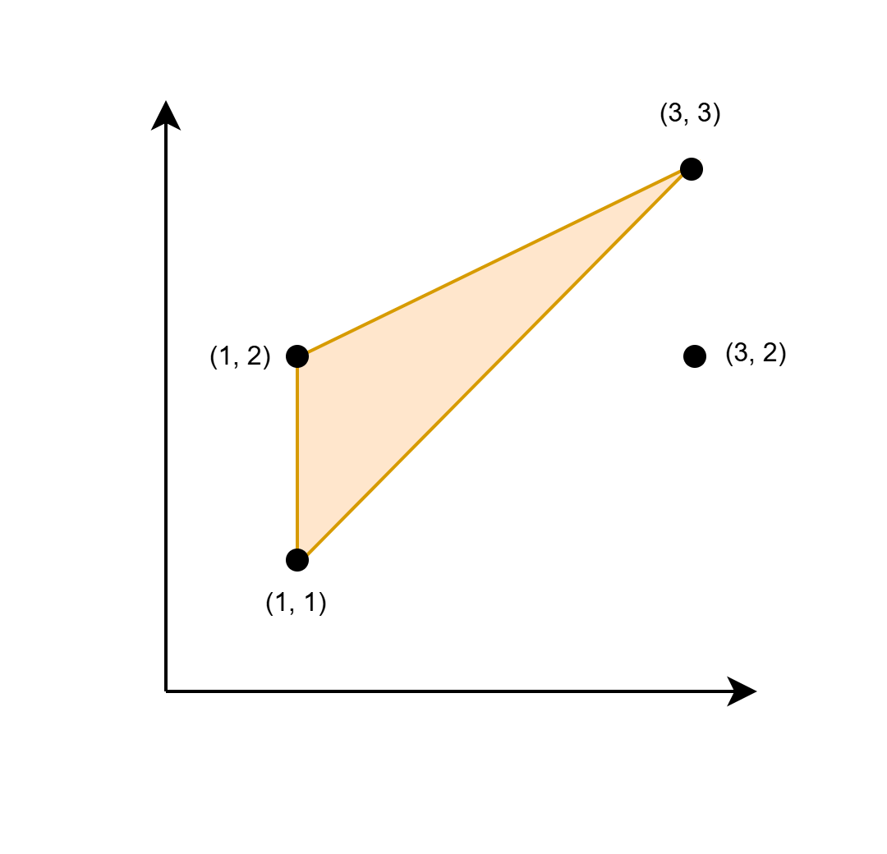

| Category | Difficulty | Likes | Dislikes |
|---|---|---|---|
| Algorithms | Medium | 49 | 10 |
array | hash-table | math | greedy | geometry | enumeration
google
You are given a 2D array coords of size n x 2, representing the coordinates of n points in an infinite Cartesian plane.
Find twice the maximum area of a triangle with its corners at any three elements from coords, such that at least one side of this triangle is parallel to the x-axis or y-axis. Formally, if the maximum area of such a triangle is A, return 2 * A.
If no such triangle exists, return -1.
Note that a triangle cannot have zero area.
Example 1:
Input: coords = [[1,1],[1,2],[3,2],[3,3]]
Output: 2
Explanation:

The triangle shown in the image has a base 1 and height 2. Hence its area is 1/2 * base * height = 1.
Example 2:
Input: coords = [[1,1],[2,2],[3,3]]
Output: -1
Explanation:
The only possible triangle has corners (1, 1), (2, 2), and (3, 3). None of its sides are parallel to the x-axis or the y-axis.
Constraints:
1 <= n == coords.length <= 1051 <= coords[i][0], coords[i][1] <= 106coords[i] are unique.